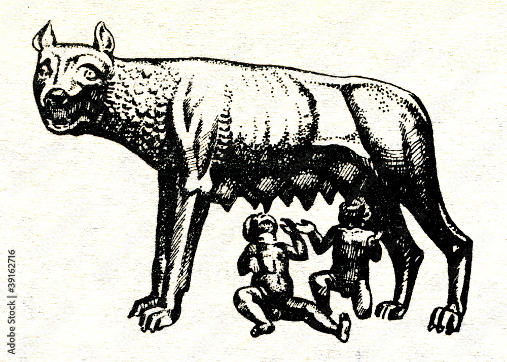

Etruria
Etruria to Latinium
- Origins
- -Literary and historical texts in the Etruscan language have not survived, and the language itself is only partially understood by modern scholars. This makes modern understanding of their society and culture heavily dependent on much later and generally disapproving Roman and Greek sources. These ancient writers differed in their theories about the origin of the Etruscan people. Some suggested they were Pelasgians who had migrated there from Greece. Others maintained that they were indigenous to central Italy and were not from Greece. The first Greek author to mention the Etruscans, whom the Ancient Greeks called Tyrrhenians, was the 8th-century BC poet Hesiod, in his work, the Theogony. He mentioned them as residing in central Italy alongside the Latins. The 7th-century BC Homeric Hymn to Dionysus referred to them as pirates. Unlike later Greek authors, these authors did not suggest that Etruscans had migrated to Italy from the east, and did not associate them with the Pelasgians.
- Etruscan League
- -According to legend, there was a period between 600 BC and 500 BC in which an alliance was formed among twelve Etruscan settlements, known today as the Etruscan League, Etruscan Federation, or Dodecapolis (Greek: Δωδεκάπολις). According to a legend, the Etruscan League of twelve cities was founded by Tarchon and his brother Tyrrhenus. Tarchon lent his name to the city of Tarchna, or Tarquinnii, as it was known by the Romans. Tyrrhenus gave his name to the Tyrrhenians, the alternative name for the Etruscans. Although there is no consensus on which cities were in the league, the following list may be close to the mark: Arretium, Caisra, Clevsin, Curtun, Perusna, Pupluna, Veii, Tarchna, Vetluna, Volterra, Velzna, and Velch. Some modern authors include Rusellae. The league was mostly an economic and religious league, or a loose confederation, similar to the Greek states. During the later imperial times, when Etruria was just one of many regions controlled by Rome, the number of cities in the league increased by three. This is noted on many later grave stones from the 2nd century BC onwards. According to Livy, the twelve city-states met once a year at the Fanum Voltumnae at Volsinii, where a leader was chosen to represent the league.
- Possible founding of Rome
- -Those who subscribe to a Latin foundation of Rome followed by an Etruscan invasion typically speak of an Etruscan "influence" on Roman culture – that is, cultural objects which were adopted by Rome from neighboring Etruria. The prevailing view is that Rome was founded by Latins who later merged with Etruscans. In this interpretation, Etruscan cultural objects are considered influences rather than part of a heritage. Rome was probably a small settlement until the arrival of the Etruscans, who constructed the first elements of its urban infrastructure such as the drainage system. The main criterion for deciding whether an object originated at Rome and traveled by influence to the Etruscans, or descended to the Romans from the Etruscans, is date. Many, if not most, of the Etruscan cities were older than Rome. If one finds that a given feature was there first, it cannot have originated at Rome. A second criterion is the opinion of the ancient sources. These would indicate that certain institutions and customs came directly from the Etruscans. Rome is located on the edge of what was Etruscan territory. When Etruscan settlements turned up south of the border, it was presumed that the Etruscans spread there after the foundation of Rome, but the settlements are now known to have preceded Rome.
